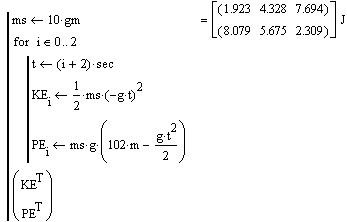

Programming |
In Mathcad, a program is entered in the programming operator, a multi-step container for Mathcad program-control operators. Specific programming operators can be used to specify local assignments to variables or functions, loop over calculations, conditionally evaluate branches, add breakpoints, trap errors, and return values.
Mathcad evaluates the sequence of statements in a program in the order specified by the programming operators then returns the result of the last step. Here is a simple example of a program.

Although the program could be rewritten as a series of expressions, this example illustrates how to group a calculation using a program and return only the results you want. You can also incorporate features similar to those found in other higher-level languages, such as conditional branches, error handling, and recursive calls.
| Programming Operators |
The following operators comprise the Mathcad programming "language":
You cannot type in any of the above commands from the keyboard; typing "for" would result in an error. Instead, you must use either a keyboard shortcut or the Programming toolbar to insert an operator.
Any valid Mathcad expression can be used in a program. For example,
The combination of Mathcad's many numerical functions and constructs with the programming operators enable you to write sophisticated functions in Mathcad.
If you are having trouble getting your programs to produce the expected results, try the program debugging tools. Mathcad provides several functions for tracing the value of any subexpression in a program, and a Trace Window for viewing results.
A program can be evaluated in place by pressing the equal sign for evaluation (=), or defined as a function and evaluated elsewhere in the worksheet. You can also evaluate a program symbolically using the symbolic equal sign.
Use programs to define expressions that would be either ambiguous, difficult to read, or impossible to construct using ranges, conditional functions, and arrays. Programs can also be used to conserve memory by defining intermediate steps in large array calculations within the body of the program. The intermediate, local values are only kept in memory while the program runs, rather than using memory until the worksheet is closed.
You may want to use programmed functions in conjunction with references, so that a single function is available for use in many other worksheets.
A program must adhere to the same unit and type balancing rules applied to any Mathcad expression or function definition. For example, a program cannot be written to handle both a function and a scalar in the same argument position using conditional branching and expression type detection. Nor can a program return a different set of units depending on the value of its inputs. Mathcad expressions must always return the same type of output and the same dimensions of output, regardless of inputs. Programs also follow this rule.